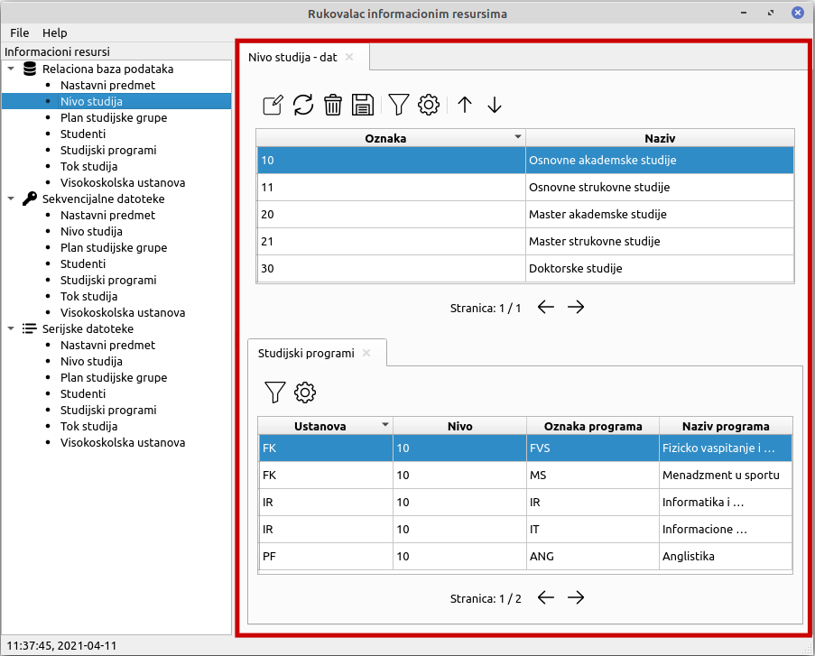
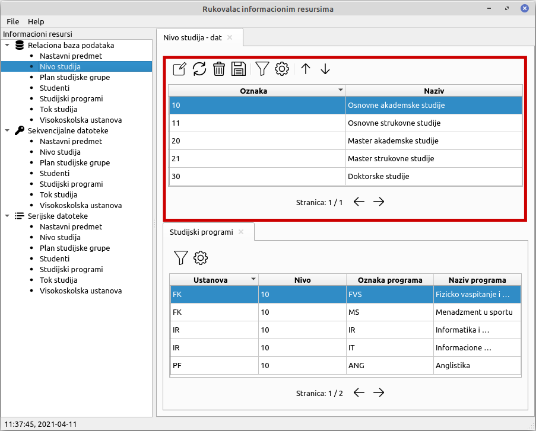
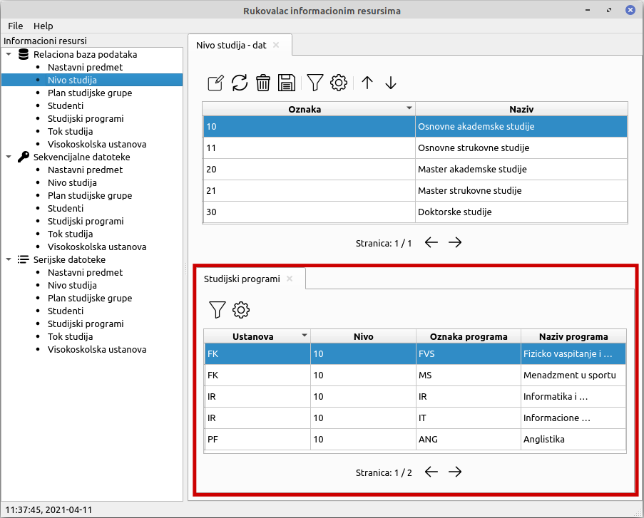
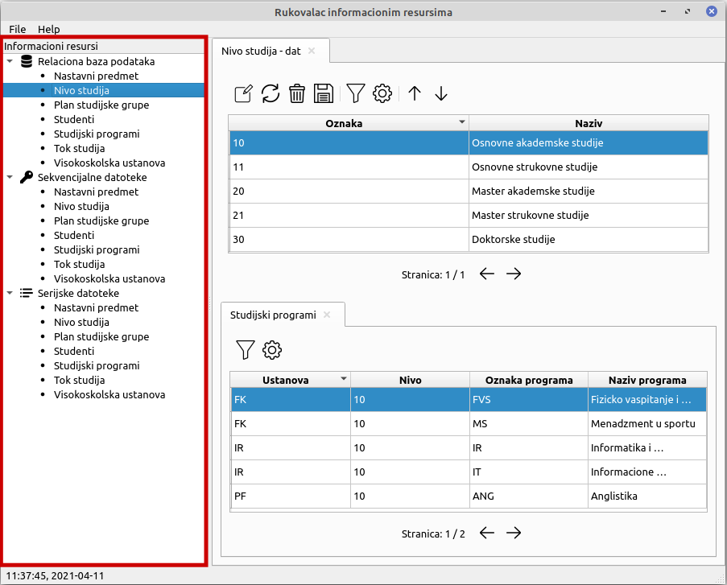
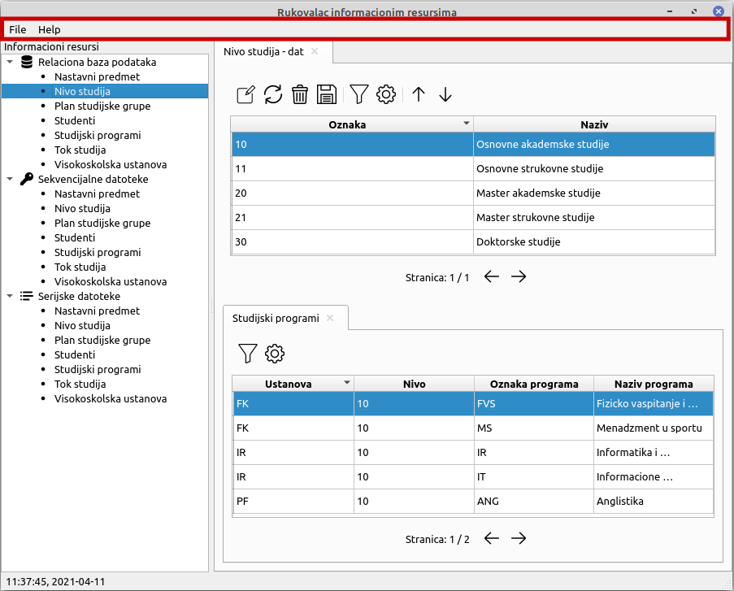
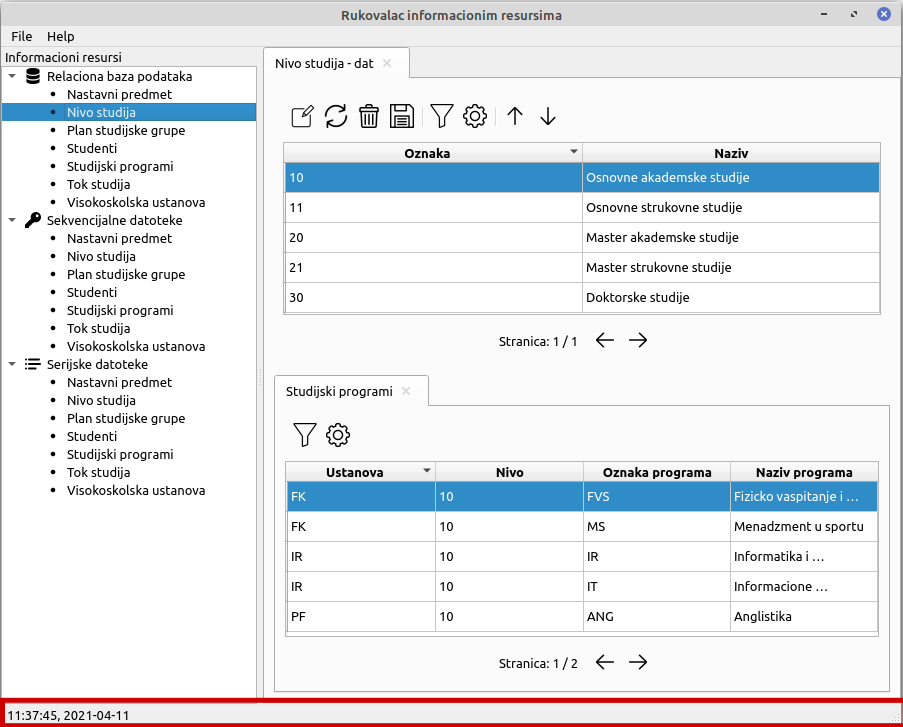

Radni prostor je sacinjen iz glavne tabele i tabela koje su povezane sa njom.
Iznad glavne tabele se nalazi paleta koja sadrzi akcije za kreiranje, izmenu, brisanje, cuvanje, filtriranje i podesavanje filtera informacionog resursa. U tabeli se nalaze kolone koje opisuju izabrani informacioni resurs, a redovi sadrze konkretne vrednosti. Tabela je prikazana u stranicama, te se ispod nje nalazi broj trenutne stranice kao i akcije za pomeranje na prethodnu i sledecu stranicu.
Iznad povezanih tabela se nalazi paleta koja sadrzi akcije za filtriranje i podesavanje filtera informacionog resursa. U tabeli se nalaze kolone koje opisuju izabrani informacioni resurs, a redovi sadrze konkretne vrednosti. Kao i glavna, povezane tabele su prikazane u stranicama, i ispod njih se nalazi broj trenutne stranice kao i akcije za pomeranje na prethodnu i sledecu stranicu.
U levom delu aplikacije prikazani su svi informacioni resursi dostupni za rad. Moguce je radati sa informacionim resursima koji su serijske i sekvencijalne datoteke i tabele u relacionoj bazi podataka. Klikom na informacioni resurs, njegovi detalji se prikazuju u radnom prostoru.
Na vrhu aplikacije nalazi se meni koji nudi cuvanje i zatvaranje svih informacionih resursa i izlazak iz aplikacije. Pored toga, u meniju je dostupno pomoc u vidu uputstva za upotrebu programskog proizovda i informacija o programu.
Na dnu aplikacije nalazi se statusna linija koja prikazuje trenutno vreme i datum.
